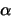

Besides the Theorem, Hammersley-Clifford
Hammersley-Clifford Theorem there is another
reason for selecting the Gibbs distribution model; this is
based on the solution to a constrained maximum entropy
problem. Let the entropy be defined as
|  | (2) |
Then the solution to this problem (which can be easily
obtained using the method of Lagrange multipliers) is
Thus we are choosing a probability measure (Gibbs) which has the largest uncertainty (with respect to entropy) among all possible measures with a specified expected energy.